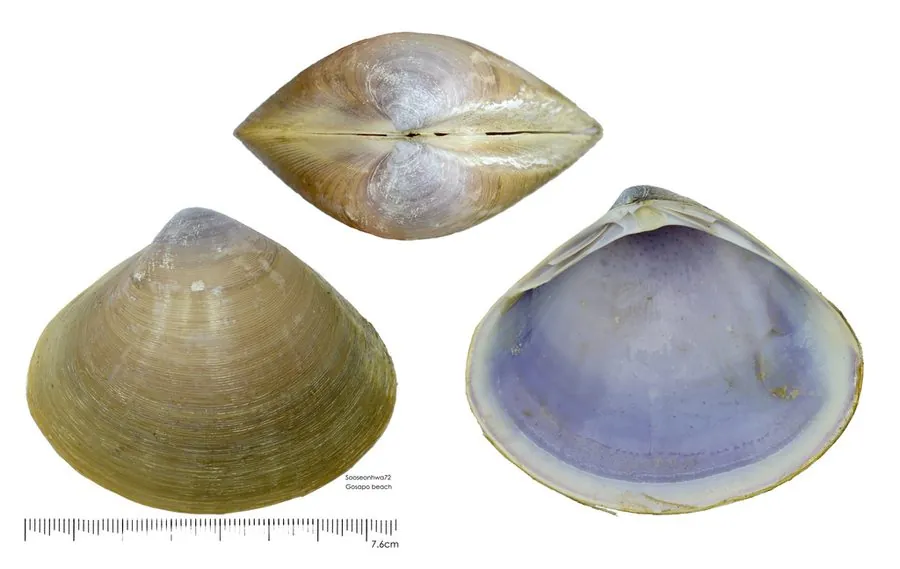

软体动物 · 动物界
西施舌 Mactra antiquata

壳薄而光滑的大型蛤蜊，水管细长，肉味鲜美，福建沿海把它比作西施的舌头，是宴席上的名贵海味。
- 分类
- 门软体动物门纲双壳纲目帘蛤目科马珂蛤科属马珂蛤属
- 栖息环境
- 潮间带下区至水深二十米的沙质和沙泥质海底
- 地理分布
- 印度洋至西太平洋沿岸，包括中国东南沿海、日本、朝鲜半岛和澳大利亚
- 保护级别
- 尚无保护级别；野生资源因采捕和近岸污染而下降
物种志
西施舌的贝壳呈三角卵圆形，壳长约八至十二厘米，壳质薄而坚，表面光滑，壳色黄白至浅褐，有细密的生长纹，壳顶稍突出，壳缘光滑，两壳闭合时缝隙很小。它的水管特别细长，伸展时可达十厘米以上，末端生有分枝的触手，形状像一条舌头，福建一带因此把它比作西施舌。足部侧扁，能在沙中迅速掘穴，遇惊时喷水缩回沙内。
它分布于印度洋至西太平洋沿岸，包括中国东南沿海、日本、朝鲜半岛、菲律宾和澳大利亚，栖息在潮间带下区至水深二十米的沙质和沙泥质海底，喜欢盐度较高、水质清澈的沙底。它以硅藻和有机碎屑为食，靠水管滤食，涨潮时伸出水管取食。繁殖期在春夏，雌雄异体，幼虫经浮游阶段后附着到沙底。西施舌肉味清甜、口感脆嫩，是福建、广东一带宴席上的名贵海味，多用来氽汤。目前尚无保护级别，野生资源因采捕和近岸污染而下降。
形态与习性
- 食性滤食硅藻和有机碎屑
- 壳长约八至十二厘米，壳薄而光滑
- 水管细长可达十厘米以上，末端分枝如舌
- 栖息深度潮间带下区至水深二十米的沙底
- 繁殖春夏繁殖，幼虫经浮游期后附着沙底
- 食用福建、广东宴席名贵海味，多氽汤
趣味知识
- 西施舌的水管伸出沙面时像一条柔软的舌头，福建人因此给它起了这个美名。
- 它壳薄而光滑，两壳闭合后缝隙极小，能减少泥沙进入壳内。
- 西施舌以肉质清甜脆嫩著称，是闽菜中氽海蚌汤的主要原料。